Transmission
37 parts Out of stock
Out of stock1992 - 1998 Dodge Viper Black Shift Knob - 0HD42LX9
Part # 0HD42LX9
$176.00
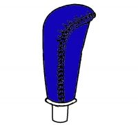
1992 - 1998 Dodge Viper Blue Shift Knob - 0HD42SB4
Part # 0HD42SB4
$150.00
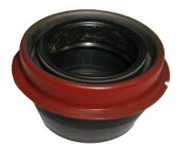
Out of stock1992 - 2002 Dodge Viper Rear Extension Yoke Seal - 04531216AB
Part # 04531216AB
$45.00
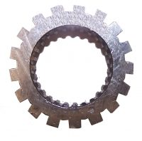
1992 - 2002 Dodge Viper Transmission Speed Rotor - 04626566
$17.00
 Out of stock
Out of stock1992 - 2002 Dodge Viper Transmission Speed Sensor - 04848214
Part # 04848214
$250.00
 Out of stock
Out of stock1992 - 2005 Dodge Viper Flywheel Mounting Bolt - 06035811
Part # 6035811
$19.00

1992 - 2006 Dodge Viper Hurst Shift Knob in Blue - P5153302
Part # P5153302
$499.99
 Out of stock
Out of stock1992 - 2006 Dodge Viper Hurst Shift Knob in Red - P5153300
Part # P5153300
$45.00
Out of stock
1992 - 2006 Dodge Viper Hurst Shift Knob in Silver - P5153301
Part # P5153301
$45.00
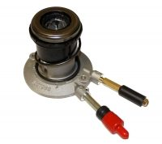
1992 - 2010 Dodge Viper Clutch Slave Cylinder - 05037357AB
Part # 05037357AB
$369.00

1992 - 2010 Dodge Viper Pilot Bearing - 53009181AB
Part # 53009181AB
$52.00
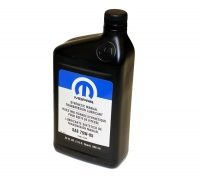
1992 - 2010 Dodge Viper Synthetic Manual Transmission Lubricant - 04874459
Part # 4874459
$27.00

1992 - 2013 Dodge SRT Viper Driveshaft U-Joint Clamp - 04428723
Part # 04428723
$12.00
 Out of stock
Out of stock1992 - 2013 Dodge SRT Viper Driveshaft U-Joint Clamp Bolt - 06502581
Part # 6502581
$8.95
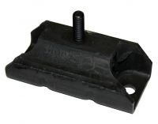
Out of stock1992 - 2013 Dodge Viper Transmission Mount A/M Poly - 04643318AC
Part # 4643318AC
$49.00
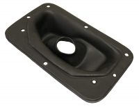
1996 - 2002 Dodge Viper Rubber Inner Gear Shift Boot - 04848038
Part # 04848038
$91.00
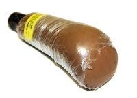
Out of stock1997 Dodge Viper Carmel Tan Shift Knob - 0HD421KA
Part # 0HD421KA
$72.00
 Out of stock
Out of stock1999 - 2002 Dodge Viper Cognac Shift Knob - 0SG08WUCAA
Part # 0SG08WUCAA
$295.00
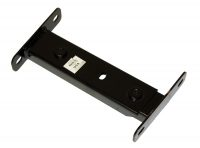
2003 - 2006 Dodge Viper SRT10 Transmission Cross Member - 05037263AA
Part # 05037263AA
$44.00
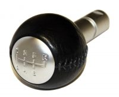
2003 - 2010 Dodge Viper ACR Short Shift Knob Black Stitching - 1SZ091X9AA
Part # 1SZ091X9AA
$300.00
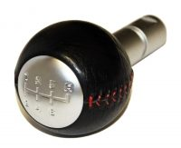
2003 - 2010 Dodge Viper SRT10 ACR Short Shift Knob Red Stitching - 1SZ091R1AA
Part # 1SZ091R1AA
$264.00

2003 - 2010 Dodge Viper SRT10 Aluminum Shift Boot Mounting Ring - 05093230AA
Part # 05093230AA
$181.00

2003 - 2010 Dodge Viper SRT10 Black Factory Shift Knob - 0SG081X9AA
Part # 0SG081X9AA
$195.00

2003 - 2010 Dodge Viper SRT10 BLACK Stitched Shift Boot - 0XP191X9AA
Part # 0XP191X9AA
$99.99
 Out of stock
Out of stock2003 - 2010 Dodge Viper SRT10 Black With Red Stitching Factory Shift Knob - 0SG081R1AA
Part # 0SG081R1AA
$74.00
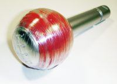
Out of stock2003 - 2010 Dodge Viper SRT10 RED Factory Shift Knob - 0SG08SR1AA
Part # 0SG08SR1AA
$149.00

2003 - 2010 Dodge Viper SRT10 Red Stitched Shift Boot - 0XP191XRAA
Part # 0XP191XRAA
$139.00
 Out of stock
Out of stock2003 - 2017 Dodge Viper SRT10 Rubber Gear Shift Boot - 05038653AA
Part # 05038653AA 5037319AA
$109.00

2004 - 2006 Dodge Viper 2010 - 2014 Transmission Conversion Kit
Part # 6060 conversion kit
$1,150.00

2006 - 2010 Dodge Viper SRT10 Console Shift Ring Hex Socket Screw - 5093298AA
Part # 5093298AA / 6036430AA
$8.49
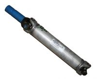
Out of stock2008 - 2010 Dodge Viper Drive Shaft - 05037990AA
Part # 05037990AA
$375.00

2008 - 2010 Viper Flywheel Including Ring Gear - 05037965AB
Part # 05037965AB
$405.00

2008 - 2013 Dodge SRT Viper Transmission Skip Shift Solenoid - 68029166AA
Part # 68029166AA
$127.50

2008 Dodge Viper SRT Black With TAN Stitching Shift Knob - 0SG081U4AA
Part # 0SG081U4AA
$215.00
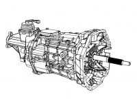
2010 Dodge Viper SRT10 TR6060 6-Speed Transmission -
$4,495.00

2013 SRT Viper GTS Black Shift Knob - 1ZV76DX9AA
Part # 1ZV76DX9AA
$280.00

NEW SRT Viper TR6060 6-Speed Transmission - Updated Gears
Part # 068206482AA
$4,495.00